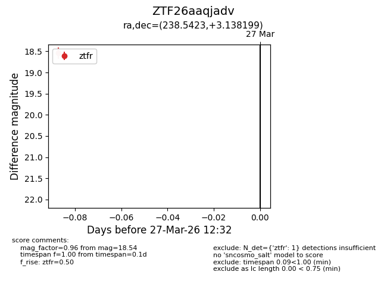
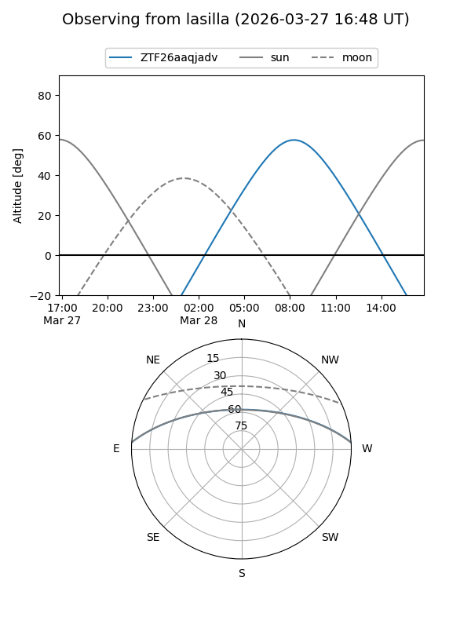
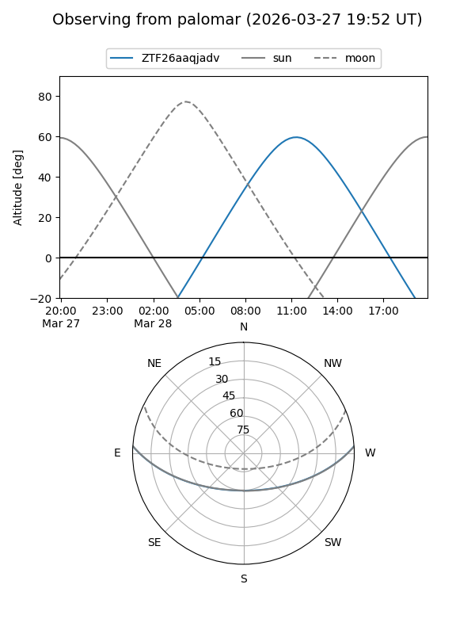

ZTF26aaqjadv
Target ZTF26aaqjadv at 2026-03-27 12:37
Aliases and brokers:
FINK: link
Lasair: link
ALeRCE: link
alt names
ZTF26aaqjadv (ztf,fink_ztf)
Coordinates:
equatorial (ra, dec) = 238.5423,+3.13820
equatorial (HMS+DMS) = 15:54:10.14,+03:08:17.52
galactic (l, b) = (12.2732,+40.22590)
Flags:
Photometry:
last ztfr=18.54
1 ztfr detections
Lightcurve

Visibility


Additional plots